Vanderbilt · Learning Series · ATD facilitator guide · print edition
Numbers, Faster, the facilitator guide

Run of show
| Screen | Full (min) | Core (min) |
|---|---|---|
| Welcome / QR | 3 | 2 |
| Objectives | 2 | 1 |
| The Chancellor's charge | 3 | <1 |
| Agenda | 1 | skip |
| 01 · The case for AI on numbers | 9 | 6 |
| Manifesto | 1 | skip |
| 02 · Safe data in | 12 | 8 |
| 03 · Ask the sheet | 12 | 8 |
| 04 · Check the math | 11 | 8 |
| 05 · The Analysis Lab | 14 | 10 |
| 06 · Tell the story | 10 | 7 |
| Recap quiz | 4 | 4 |
| Capstone · My Data Loop card | 6 | 5 |
| Glossary | 1 | skip |
| Closing · commitment | 4 | 1 |
| Total | 93 | 60 |
Audience
All Vanderbilt staff who touch a spreadsheet, a report, or a dashboard: program coordinators, analysts, finance and HR staff, managers who assemble the month-end numbers. 8 to 24 works best (the light-sorting and finding drills run in pairs); scales larger with room votes. Prerequisite: Start Smarter or equivalent comfort opening an AI tool; the traffic light from the AI courses is assumed and retaught here for files.
Room setup
Projector plus presenter device; learners on their own devices via the Welcome-slide QR; movable seating for pairs. Learners should be able to picture their real datasets, so the pre-work matters more than usual. Virtual: breakouts of 2 for the light-sort and finding drills. Set the norm in the first minute: datasets and columns, never names or personal records, and nothing typed is saved or sent.
Materials
- Projector or large display and the facilitator link open (this edition)
- Facilitator laptop with arrow keys or clicker; all notifications off
- Learner devices (BYOD) joining via the welcome-slide QR
- A few printed cheat sheets (cheatsheet.html) for anyone without a device
- Printed Data Loop cards (worksheet.html) as the no-device and projector-failure fallback
- Whiteboard or flip chart with markers for the loop diagram and the live recompute
- A pocket calculator or phone calculator visible on the desk: the recompute prop makes the check ritual concrete
A week before
- Read this guide end to end, then run BOTH editions start to finish, doing every exercise, including building a Data Loop starter for a dataset you genuinely own. You will be asked what you would run the loop on first; a real answer plays far better than a hypothetical.
- Run the actual Data Loop once on a real (de-identified or public) spreadsheet in an approved tool, so you can describe a live run from experience, including one moment where a check caught something.
- Send the pre-work invite (template on this page) with the calendar invite: know one spreadsheet or report you own, and roughly what its questions cost you by hand.
- Decide your path now: Full (90-minute slot) or Core (60). Mark which pair drills you keep versus run solo.
- Skim Gallup's workplace AI research page so the numbers in Guess the Number are fresh; the game's reveals carry the citations, but you should be able to say 'the research' with a straight face.
The day before
- Test the projector with the facilitator link; confirm the notes rail is readable from where you'll stand.
- Scan the welcome QR from the back of the room with your own phone; it must land on the learner edition.
- Run one full round of the Analysis Lab and one trainer so you can drive them without looking.
- Print 5 to 10 cheat sheets and Data Loop cards, and put the calculator in your bag.
- Re-read the tough-questions bank; say the 'can I trust any of its numbers?' response out loud once. That question is coming.
30 minutes before
- Welcome slide up as people arrive; it does the enrolling for you.
- Close every other tab and app; silence the machine.
- Test arrow-key navigation and one interaction (run a Guess the Number round, open the lab).
- Write 'DATASETS AND COLUMNS, NEVER NAMES' where the room can see it all session.
- Draw the loop on the whiteboard: four boxes labeled Describe, Ask, Check, Tell, with an arrow circling back. You'll point at it all session.
When things go sideways
If Projector or the site fails mid-session: Teach from the whiteboard: the loop diagram, the traffic light, and the check ritual all draw in seconds. The light-sort and catch-the-error games run verbally with the room voting by hands; the starter and capstone move to the printed cards. The lab becomes a group walk-through: read each step's three options aloud and have the room vote.
If Learner devices can't join (wifi or filters): Run facilitator-only: the trainers play well on the projector with the room voting A/B/C by hands; the private starter and capstone move to paper. You lose typing, not learning.
If You're 10+ minutes behind by the Analysis Lab (05): Declare the Core path silently: pair drills become solo passes, debriefs shrink to one voice, and the closing tightens to the fist-to-five plus commitment round. Never cut the lab, the starter, or the capstone; they carry the session's practice objectives.
If Someone starts reading real people data off their screen, or names a colleague in an example: Protect the norm warmly: 'Hold that. Datasets and columns, never names. Describe the shape of the file, not the people in it.' If it keeps happening, restate why: the exercises are built so nobody in the room ever handles anyone's personal records, which is also the habit the course teaches.
If The room is skeptical: 'AI makes up numbers, so why would I let it near my spreadsheet?': Agree with the premise and flip it: yes, it fabricates, which is why the loop has a check step with teeth. Then point at the payoff data in Guess the Number: the three-quarters figure comes from people running exactly this kind of checked workflow. The course's position is theirs: never trust, always verify, and collect the speed anyway.
If The room is the opposite: enthusiasts already pasting everything into free chatbots: Aim the enthusiasm at the light before anything else: 'Great, you're ahead on the asking; today upgrades the safety and the checking.' Run the Green-Yellow-Red trainer with extra weight and let the FERPA outcome in the lab do the sobering. Enthusiasts fail this material through red files and unchecked numbers, and both drills are written for exactly them.
If Someone raises a real data-privacy concern mid-flight, or admits a file already went into an unapproved tool: Stop and honor it; this is the one interruption that outranks the agenda. Restate the traffic light, thank them for surfacing it, and route the specific case to the right owner (their manager or the privacy office) rather than improvising policy from the front of the room. No shaming: the person who tells you is the person the course is working on.
If A learner insists their unit's numbers are too messy or too weird for AI to help: Agree that mess is real, then point at the describe step: quirks belong in the describe paragraph, and messy data is exactly why the loop starts there instead of at the ask. Offer the fallback rung: even on a hopeless file, 'summarize what is in this sheet and list its problems' is a legitimate first run, and often the most valuable one.
Tough questions, ready answers
Q: AI invents numbers. Can I actually trust any figure it gives me?
No, and the course never asks you to. The loop treats every AI-produced figure as unverified by definition: one recompute by hand, a totals-and-counts check, and a row trace on anything surprising, before any number travels. What you trust is your check, not the model. The honest symmetry: hand-built spreadsheets contain errors too, and nobody audits their own totals at 5 p.m. The loop often catches both kinds.
Q: Is de-identifying a file really enough? It feels like a loophole.
It is a recognized practice, not a loophole, and the course teaches the conservative version: delete identifier columns in a copy, read the free-text fields by eye because names hide in comments, aggregate to counts when counts will do, and even then the file only goes into approved VU tools, never consumer ones. And when a file cannot be cleanly de-identified, the answer is it stays out entirely. If a learner's case is genuinely ambiguous, route it to the privacy office rather than ruling from the front of the room.
Q: Why not just learn Excel formulas or Power BI properly instead?
Keep both; they solve different problems. Formulas and dashboards are the source of record and always will be; the loop never replaces them, and the check ritual leans on them. What AI adds is speed on the questions you never get to: the ad hoc comparison, the outlier hunt, the plain-language summary of a sheet you did not build. Twenty minutes of loop beats an afternoon of manual cross-tabulation for exactly those, and the answer still gets verified against the real file.
Q: My data lives in Oracle and secure systems. Am I even allowed to export it?
The course does not change any system's export rules; whatever your unit's policy is on pulling data out of Oracle stands. The loop starts after a legitimate export exists, usually the same CSV people already work with by hand. If exports are restricted, two honest options: run the loop on the aggregated reports you already receive, or work with made-up practice data to build the skill while you ask the system owner what is permitted.
Q: If AI does my analysis, is this how my job gets smaller?
The honest answer: the mechanical part of the work shrinks, and that is the point, because the mechanical part was never the valuable part. What grows is the part only you can do: knowing which questions matter, checking what comes back, and making the recommendation. Gallup's data says the gains land on people who use these tools often and well; the risk concentrates on work that stays purely mechanical. This session moves you to the right side of that line, and no facilitator can promise what any organization decides years out.
Q: How is this different from just asking ChatGPT to analyze my file?
The raw ask is where most people start and stall: no describe, so the model guesses what columns mean; no ladder, so one prompt returns a wall of mush; no check, so the first wrong number ends the experiment or, worse, ships. The loop is the difference between dabbling and the frequent-user gains in the research: describe first, one rung at a time, recompute before believing, and a two-sentence finding at the end. Same tool, different results.
Q: What about charts? Our leadership only looks at dashboards.
The chart brief is built for that reader: give the AI the comparison, the audience, and the takeaway line you want under the chart, then verify the two numbers the chart hangs on. For standing dashboards, the loop is upstream: it finds the story worth dashboarding and drafts the comparison, and the dashboard tool renders the permanent version. The takeaway line, like the recommendation, stays yours.
Copy-paste templates
Pre-work invite (paste into the calendar invite)
Subject: Before our Numbers, Faster session. One thing to bring: one spreadsheet or report you own or update on a schedule, a monthly export, a term-by-term summary, an end-of-month report, anything whose questions you currently answer by hand. You will never be asked to show it or to name anyone in it; every exercise runs on datasets and columns, and everything you type stays on your screen. Come knowing roughly what answering its usual questions costs you in minutes or hours. That's it, no reading, no tools to install.
7-day pulse (send one week after)
Subject: One week later, did the first run happen? Three quick lines, reply whenever: 1) Did you run the Data Loop on the dataset from your card? 2) What did the answer cost in minutes, against what it used to cost by hand? 3) What did the checks catch, if anything? Replies come to me only. Not yet? The card still works; this note is your nudge.
30-day re-poll (send a month after)
Subject: Thirty days of the Data Loop. Two questions, same scale as the room: 1) Fist to five, how confident are you now running AI on a real dataset, checks included? 2) Is the loop part of your monthly routine, and what have the checks caught so far? Reply with a number and a line. The before-and-after pair is how we know this session did more than feel good.
After the session
Seven days out, send the pulse: 'Did the first Data Loop run happen? What did the answer cost in minutes versus by hand? What did the checks catch?' At 30 days, send the re-poll: the same fist-to-five confidence question from the close, plus 'is the loop part of your routine now, and what have the checks caught?' The count of first runs actually completed is the program's headline Level 3 metric.
Welcome / QR Full 3 min · Core 2
Get every learner into the experience on their own device and set the norm that makes real-dataset material safe: datasets and columns, never names or personal records, and nothing typed leaves the screen.
Say
“Welcome. Point your camera at that code before we start. Today is about the numbers you already produce: the exports, the month-end reports, the sheets you total by hand. The research says this is one of the highest-payoff places to use AI, and also one of the easiest places to get burned by it, so everything we do today comes with a check built in. One ground rule for the next ninety minutes: datasets and columns, never names or personal records. And everything you type today stays on your screen; nothing is saved or sent anywhere.”
Do
- Have this slide projected as people arrive.
- Point at the QR and get phones up before you say anything else.
- Set the norm explicitly and early: datasets and columns, never names or personal records; typed exercises stay on their screens.
- Confirm by show of hands that most of the room has the site open before advancing.
Ask
“Quick calibration, shout it out: how many of you produced or updated a number this week, a report, a total, a dashboard cell? And how many of you used AI to do any of it?”
Expect:
- Nearly every hand up on the first question
- Very few hands on the second
- Someone jokes that they don't trust it with their numbers
Respond: Take the joke seriously and warmly: 'That instinct is correct, and it's half of today's method. The other half is collecting the speed anyway. By the end you'll have both.'
Validate: 80%+ of the room has the deck open on a device; the room can repeat the 'datasets and columns, never names' norm back to you.
Watch for: Anyone bracing for either a coding class or an AI sales pitch. The frame that relaxes both: today is a working session about the spreadsheets you already own, and every technique comes with its check attached.
Transition: “Here's exactly what you'll walk out able to do.”
Core path: Core: one scan prompt, the norm stated once, move on.
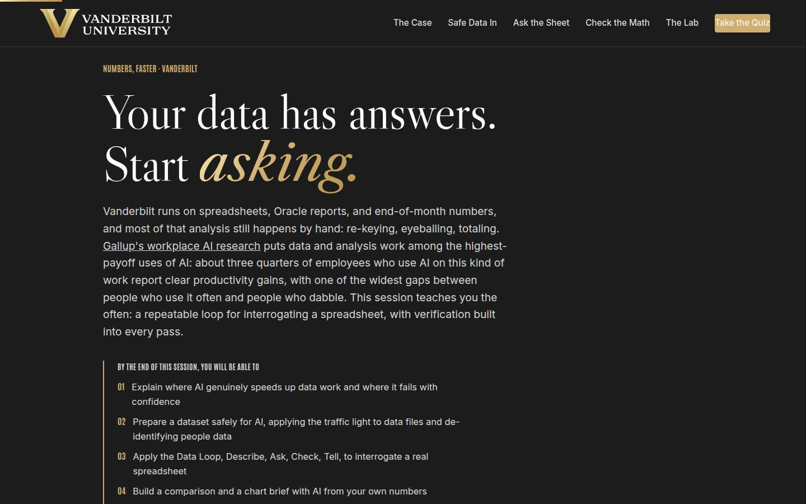
Objectives Full 2 min · Core 1
Set the contract: five capabilities, ending in one real dataset carded for a dated first Data Loop run.
Say
“Five things by the end. You'll know where AI genuinely helps with data work and where it fails, with numbers behind both. You'll be able to prepare a file safely, which includes knowing when a file must never go in at all. You'll run the Data Loop, the method this session is named for: Describe, Ask, Check, Tell. You'll build a comparison and a chart brief from your own numbers. And you'll verify every AI-produced figure before it travels, which is the habit that protects your name. It all lands in one artifact: a Data Loop card for a dataset you actually own, with a date on it.”
Do
- Read the five objectives briskly, in plain language.
- Land on the last two together: build with AI, and verify before anything travels. They are one skill, not two.
- Name the sources once for credibility: Gallup's workplace AI research for the payoff numbers, SHRM for the cost of skipping checks.
Validate: Learners can say what the capstone will be (one dataset, one first move, one dated first run).
Watch for: Tool questions arriving early ('which AI is best for Excel?'). Park them: the loop runs the same in any approved tool, and the approved list is on the traffic light in section 02.
Transition: “Before the plan, one minute on why the university wants exactly this from you.”
Core path: Core: objectives 3 and 5 out loud; the rest on screen.
The Chancellor's charge Full 3 min · Core <1
Anchor the session in the institution's own plan: the one-sentence vision, the three focus areas in data terms, and where trusted numbers feed the reputation flywheel.
Say
“Chancellor Diermeier's vision for this university is one sentence with no hedge in it: Vanderbilt will define the great university of the 21st Century and be it. The motto has always been the dare, Crescere aude, dare to grow, and growth shows up first in the numbers. The spreadsheets and month-end reports on your desks are the instruments the university reads itself with, and the loop you learn today makes them arrive sooner and truer. The bottom card is the reputation flywheel: reputation attracts talent, funding, partnerships, and access, and execution runs on numbers somebody trusted enough to act on. That somebody is in this room.”
Do
- Read the vision sentence exactly as written, then pause; it lands better without commentary.
- Walk the three focus cards in one breath each, landing each at-your-desk line.
- Close on the flywheel card: execution runs on trusted numbers, and the Check pass of the Data Loop is where the trust comes from.
Validate: Learners can name one report or spreadsheet of their own that feeds a decision beyond their desk.
Watch for: Strategy fatigue: part of the room has heard the vision language elsewhere. Keep it in data terms; the at-your-desk lines exist so nobody has to squint to find themselves in it.
Transition: “Six ideas, in a deliberate order.”
Core path: Core: under a minute: read the vision sentence, gesture at the three focuses, move on.
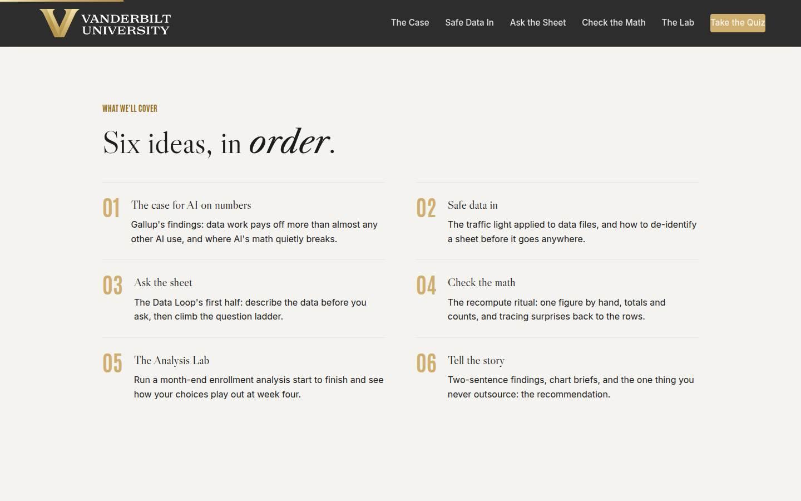
Agenda Full 1 min · Core skip
Show the arc once so learners can place each tool as it arrives: evidence, safety, ask, check, practice, telling.
Say
“The arc is simple: first the evidence, then safety, because the file goes in before any question gets asked. Then the loop's front half, describe and ask, then the back half, the checking that makes the speed trustworthy. Then you'll run a whole month-end in the lab, and we finish with the part your readers actually see: telling the story.”
Do
- Walk the six items in one breath each.
- Point out the shape: the case (01), safety before speed (02), the loop's two halves (03 and 04), practicing it whole (05), and landing it with readers (06).
Validate: None needed; this is orientation.
Watch for: Don't teach here; every concept has its own slide.
Transition: “Start with the evidence, because some of you think AI can't be trusted with numbers, and some of you think it's magic. The data disagrees with both.”
Core path: Core: skip entirely; the deck's structure carries it.
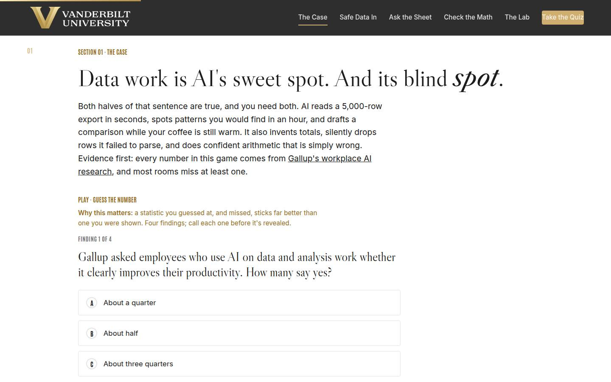
01 · The case for AI on numbers Full 9 min · Core 6
Establish with guessed-at, missed numbers that data work is among AI's highest-payoff uses, that gains concentrate in frequent users, and that most staff haven't started, which makes the room early rather than late.
Say
“Before any method, the evidence, and I want you to guess. Gallup has been surveying how employees actually use AI at work, and data and analysis work keeps landing near the top of the payoff table: of the people who use AI on their numbers, about three quarters report clear productivity gains, and the gains concentrate heavily in people who use it often rather than once a quarter. Meanwhile most of this work, in most offices, is still done entirely by hand. Both halves of today live in that gap. And the blind spot is real: AI will hand you an invented total with a straight face, which is why every technique today ships with its check. Four findings, call your number before each reveal.”
Do
- Frame the game: four findings from Gallup's workplace AI research, guess each number before it's revealed. Missed guesses are the point; they stick.
- Run Guess the Number on devices, or as a room vote on the projector; call for guesses out loud before each reveal.
- After the reveal round, land both halves of the headline: sweet spot (the payoff data) and blind spot (invented totals, dropped rows, confident wrong math). Give one concrete example of each from your own practice run.
- Run the quick check (first pass versus source of record), then the pair activity: name your scheduled number and estimate its mechanical share.
- Take the hands count on 'mechanical share above half' and connect it to the payoff findings: that share is the target.
Ask
“Think of the number you produce on a schedule. How much of the time it costs is pulling and totaling, and how much is actual thinking?”
Expect:
- Most say the mechanical share is well over half
- Someone realizes the thinking part is minutes inside an afternoon of assembly
- A power user says they already automated it with formulas
Respond: For the formula user, warmly: 'Keep the formulas; they're your source of record. The loop adds the questions you never get to, and section 04 will use those formulas as the check.' For the rest: 'That mechanical share is exactly what the research says AI takes off your desk, and the thinking share is what today protects.'
Debrief: High payoff, wide frequent-user gap, low adoption: the fastest available win in this room is sitting in a file somebody already owns. The rest of today is how to collect it without getting burned.
Validate: Quick check correct; every learner has named one scheduled number they produce and estimated its by-hand cost. That number feeds the starter in 03 and the capstone.
Watch for: A skeptic litigating survey methodology. Don't defend a single figure; the case is the convergence: high reported payoff, gains concentrated in frequent users, low adoption. Park deep methodology questions and keep the room's attention on its own hours.
Transition: “One sentence before the method, and it's the sentence that keeps you safe all session.”
Core path: Core: Guess the Number as a fast room vote, quick check stays, the pair inventory becomes one show of hands with no discussion.
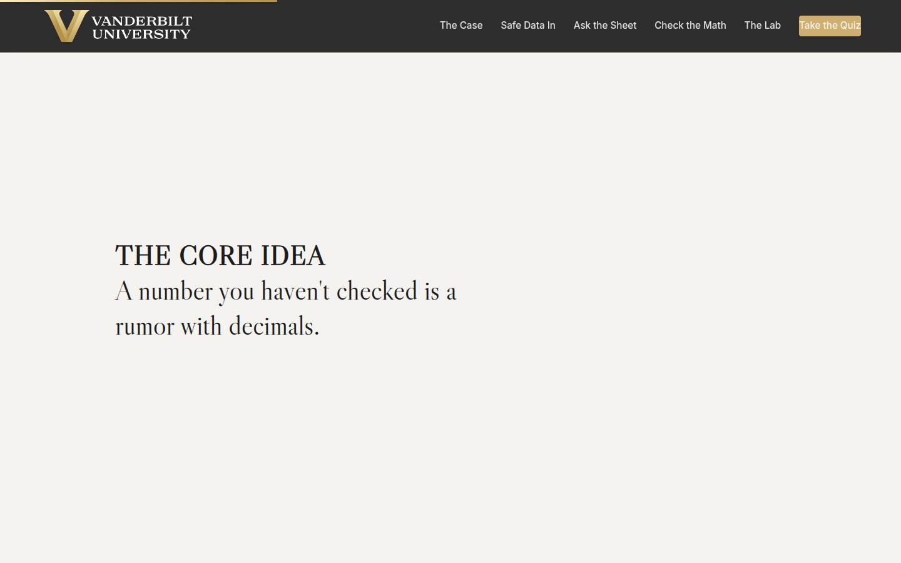
Manifesto Full 1 min · Core skip
One beat of stillness to lock the session's core idea, check before believe, before the method arrives.
Say
“A number you haven't checked is a rumor with decimals.”
Do
- Let the line animate word by word. Say nothing until it finishes.
- Read it once, slowly, then advance.
Validate: None; this is pacing.
Watch for: The urge to talk over it. Don't.
Transition: “And before any number comes out, a file has to go in. That's where the safety lives.”
Core path: Core: skip; say the line yourself as you pass it.
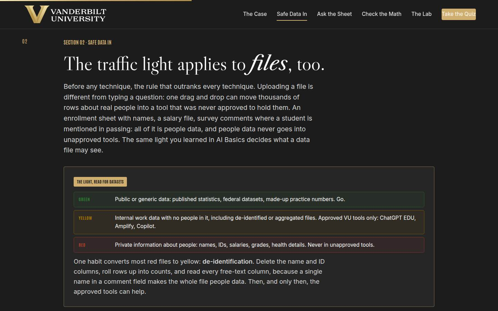
02 · Safe data in Full 12 min · Core 8
Apply the shared traffic light to data files, teach the five-minute de-identification ritual, and make the red line unmissable: people data never enters unapproved tools, whatever the deadline.
Say
“Before the loop, the rule that outranks the loop. Uploading a file is not like typing a question: one drag and drop can move ten thousand rows about real people into a tool that was never approved to hold them. So the same traffic light you know from Start Smarter, read for files. Green: public or generic data, published statistics, practice numbers. Go. Yellow: internal work data with no people in it, including files you've de-identified. Approved VU tools only: ChatGPT EDU, Amplify, Copilot. Red: private information about people. Names, IDs, salaries, grades, health details. Never in unapproved tools. And one habit converts most red files to yellow: de-identification. Copy the file, delete the name and ID columns, read the free-text fields with your own eyes, because one name in a comment makes the whole file people data. Five minutes, and the toolkit opens.”
Do
- Land the difference first: uploading a file is not typing a question; one drag and drop can move thousands of rows about real people.
- Walk the traffic light card slowly, red row last and loudest: private information about people, never. Name the approved yellow-lane tools: ChatGPT EDU, Amplify, Copilot.
- Teach de-identification as a ritual on the whiteboard: copy, strip identifier columns, read the free text, aggregate when counts will do.
- Send them to Green, Yellow, or Red: five datasets, call the light. The comment-column item is the teaching moment; slow down on it.
- Run the pair drill from Go deeper: two real datasets each, call the light, plan the de-identification for any red one.
Ask
“From the pair drill: did anyone's file change color while you talked about it? What flipped it?”
Expect:
- A 'yellow' file turned red because of a comment or notes column
- Someone realizes their 'anonymous' sheet still has employee IDs in it
- A red file turned yellow once someone said 'we only need the counts'
Respond: Name the pattern: 'Files flip when you read the actual columns instead of the file name. That's the whole skill: the light gets called on contents, not titles. And notice the aggregation move: counts answer most questions and carry nobody.'
Debrief: The light is called on contents, not file names; identifiers and free text are where red hides; and de-identification is five minutes that opens the yellow lane. Nothing in the rest of today overrides this section.
Validate: 4+ of 5 on the trainer for most of the room; every learner has called the light on their own datasets, and the room can state the light unprompted, including the comment-field trap.
Watch for: Two drifts: the enthusiast who treats de-identification as optional friction ('it's just internal'), and the quiet admission that a red file already went into a consumer tool. Correct the first immediately and kindly; for the second, no shaming, route it to the right owner after the session. The light correction matters more than the flow of the room.
Transition: “Now the file is safe to work with. Time to actually ask it something, and there's a right order.”
Core path: Core: light card and de-identification ritual at full strength, trainer on devices; the pair drill becomes a solo pass calling the light on your own two datasets.
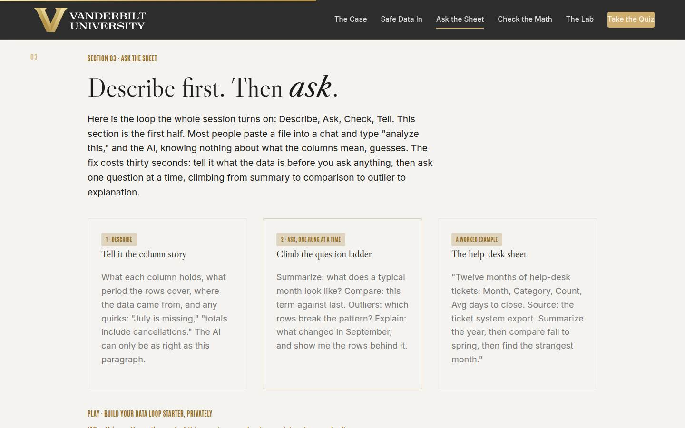
03 · Ask the sheet Full 12 min · Core 8
Install the Data Loop's front half: describe the data before asking (columns, period, source, quirks), then climb the question ladder one rung at a time, and get every learner a private starter naming their real dataset and first questions.
Say
“Here's the method, and it's four words: Describe, Ask, Check, Tell. This section is the first two. Most people paste a spreadsheet into a chat and type 'analyze this,' and the model, knowing nothing about what your columns mean, guesses. So first, describe: tell it what the data is. What each column holds, what period the rows cover, where it came from, and the quirks, July is missing, totals include cancellations. Thirty seconds, and it is the single cheapest quality upgrade in this whole course. Then ask, one question at a time, climbing a ladder: summarize a typical month. Compare this term to last. Which rows break the pattern? What changed in September, and show me the rows behind it. One rung at a time, because each answer gets checked before the next question builds on it. In a minute you'll write your own starter, privately: your dataset, your grind question, and the question you never have time to ask.”
Do
- Name the loop once, pointing at the whiteboard diagram: Describe, Ask, Check, Tell. This section is the front half.
- Walk the three cards: the describe step, the ladder, and the worked help-desk example. Read the example describe paragraph aloud; hearing one is worth three explanations.
- Stress the failure it prevents: 'analyze this' with no description forces the model to guess what columns mean, and it will guess confidently.
- Then the section's real work: the private starter. Three fields: the dataset, the grind question, the wish. Repeat the privacy line before they type.
- Give the starter quiet time; the wish field deserves a full minute, it is where the payoff hides.
- Run the pair drill from Go deeper: share starters, turn the grind question into a two-rung ladder, one pair reads theirs to the room.
Ask
“From the starters: what's your wish question, the one you never have time to ask your own data?”
Expect:
- Trend questions: which units or categories are quietly drifting
- Comparison questions nobody has time to build: this year against last, program by program
- Someone admits they don't know what to ask, they just produce the same report
Respond: For the 'don't know' answer, warmly: 'Then your first rung is the summarize rung: describe the sheet and ask what a typical month looks like. The wish questions appear once the summary is in front of you.' For the rest: 'Notice your wish is almost always one rung past your grind. That's the ladder paying for itself.'
Debrief: Describe before ask, one rung at a time, and everyone now has a real dataset with real questions written down. The half you just learned makes the AI fast; the half coming next makes it trustworthy.
Validate: Every learner has a starter with a named dataset, a grind question, and a wish question; the pair ladders begin with a describe line, unprompted. This starter feeds sections 04, 05, and the capstone.
Watch for: Starters that name a system ('Oracle') instead of a dataset. Redirect to the export: what file or report actually lands on your desk? Also the learner who claims no repeating dataset; ask what number their boss requests most often, and a dataset will appear.
Transition: “Because everything the sheet just told you is, so far, a rumor with decimals.”
Core path: Core: cards fast with the example read aloud, starter stays at full length with its quiet minute protected; the pair ladder drops to an optional 90 seconds.
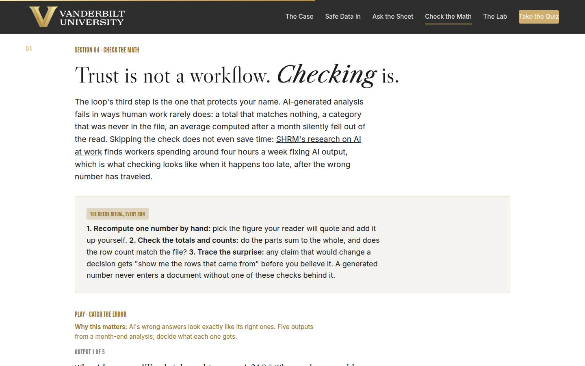
04 · Check the math Full 11 min · Core 8
Install the check ritual (recompute one number, totals and counts, row trace on surprises) as a non-negotiable step, with the SHRM four-hours finding as the cost of checking too late.
Say
“Now the step that protects your name. AI analysis fails differently from human analysis: it hands you a total that matches nothing, a category your file never had, an average computed after a month quietly fell out of its read, all in perfect formatting and a confident tone. So the loop's third step is a ritual, and it runs every time. One: recompute one number by hand, the one your reader will quote. Two: check the totals and counts, do the parts sum to the whole, does the row count match the file? Three: trace the surprise, any claim that would change a decision gets 'show me the rows that came from' before you believe it. Minutes, not hours. And skipping it doesn't save time: SHRM finds workers spending around four hours a week fixing AI output. That's what checking costs when it happens after the number traveled.”
Do
- Open with the three failure textures on the projector or whiteboard: totals that match nothing, categories that were never in the file, averages computed after a month silently dropped.
- Walk the check ritual card: one recompute, totals and counts, row trace. Do a live recompute with the calculator prop; the physicality lands.
- Cite the cost of skipping: SHRM finds workers averaging around four hours a week fixing AI output. Checking happens either way; early is minutes, late is hours with an audience.
- Send them to Catch the Error: five outputs, let it through or stop it. The clean item matters; the lesson is calibration, not paranoia.
- Run the quick check, then the pair drill: the ritual against the 4,180-tickets output, and surface what pairs caught.
Ask
“From the drill: what did your pair catch in that output, and which of the three checks caught it?”
Expect:
- The average: 380 a month times twelve is nowhere near 4,180, caught by the recompute
- The Facilities category: was that even in the file? Caught by the row trace
- Someone asks how many rows the model read at all, the counts check
Respond: Celebrate the coverage: 'Between you, the room ran the whole ritual: recompute, counts, trace. That's the point, three cheap moves that each catch a different failure. Alone, each check misses something; together they cover the board.'
Debrief: Recompute, totals and counts, row trace: minutes of checking that catch broken math, dropped data, and inventions. From here on, no generated number travels naked.
Validate: 4+ of 5 on the trainer; pairs catch the broken average in the drill and at least some question the Facilities category; the room can recite the ritual's three moves unprompted.
Watch for: The over-correction: learners concluding every AI answer needs a full manual redo. Keep the budget idea alive: the ritual is three targeted moves in minutes, and a check that costs what the work did means the step gained nothing. The trainer's trustworthy item exists to make letting a verified number through feel legitimate.
Transition: “You now have the whole loop in pieces. Time to run it whole, on a month-end with a deadline.”
Core path: Core: failure textures in one breath, ritual card verbatim with the live recompute kept, trainer on devices; the pair drill becomes a solo pass on the 4,180 output.
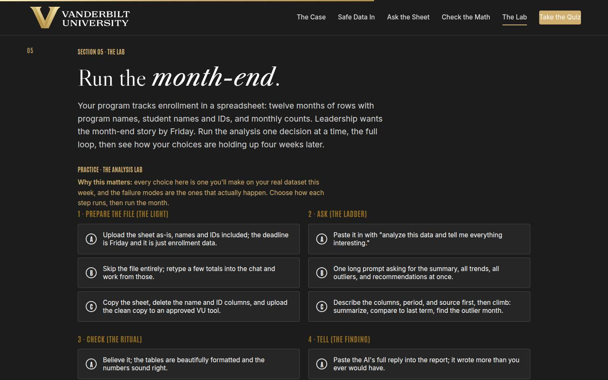
05 · The Analysis Lab Full 14 min · Core 10
Give every learner a full felt rep of the Data Loop: four decisions on a realistic month-end, a four-week outcome that rewards the loop's design rather than AI enthusiasm, and a visceral FERPA near-miss for anyone who uploads the red file. The session's deepest practice block.
Say
“Here's a month-end you'll all recognize. Your program's enrollment lives in a spreadsheet: twelve months, program names, student names and IDs, monthly counts. Leadership wants the story by Friday. You're going to run the whole Data Loop on it, one decision per step: how the file goes in, how you ask, how you check, and what you hand leadership. Then the lab runs four weeks and shows you what your choices did. Two warnings from the field. First: watch the file step, because that sheet has names in it, and the deadline will whisper that it doesn't matter. Second: when these workflows fail, it is almost never because the AI was too weak. It's because a wrong number flowed through a missing check and reached someone who mattered. Run the month.”
Do
- Set the scenario in one breath: enrollment sheet with names and IDs, leadership wants the month-end story Friday, four decisions.
- Send them into the lab on devices: choose how each step runs, then run the month.
- Let people get their four-week outcome individually; the mid and weak tiers teach more than the strong one, so don't coach choices in advance.
- Ask for a show of hands by tier, and ask specifically who got the privacy-office outcome on step one. If anyone did, read that outcome aloud; it is the most important paragraph in the lab.
- Push the rerun: strengthen your weakest step and run the month again. The delta between runs is the lesson.
- Then the pair drill: walk your real dataset from the starter through the four lab steps out loud, and name your weakest step.
Ask
“For those who hit the mid or weak tier: which single choice cost you the month, and is it the same choice your unit makes today?”
Expect:
- The believed output: 'the tables looked so clean'
- The full paste into the report: it felt thorough
- An honest 'my real routine is the weak version of at least two steps'
Respond: Treat that last answer as the room's win: 'That recognition is the whole lab. The weak tier isn't hypothetical; it's a description of how unmanaged AI use already works. You now know the four fixes, and they're all on your cheat sheet.'
Debrief: The lab's scoring is the session's thesis in miniature: the value comes from the loop around the AI, the file step is the one you can never take back, and week four is where missing checks send their bill. Your real routine's weakest step now has a name.
Validate: Every learner completes at least one lab run; most reach the strong tier on a rerun; every learner can name which of the four steps is weakest in their real routine today.
Watch for: Learners who game the lab by picking the obviously maximal option everywhere without reading the coaching. The question that re-engages them: 'which of these choices does your unit actually make today?' Also watch clock discipline; this section has the least slack.
Transition: “One step left, and it's the only one your readers ever actually see.”
Core path: Core: one lab run instead of run-plus-rerun (rerun only for learners who hit weak tier), tier hands stay, the pair walk-through becomes a solo pass. This is the floor; never cut the lab entirely.
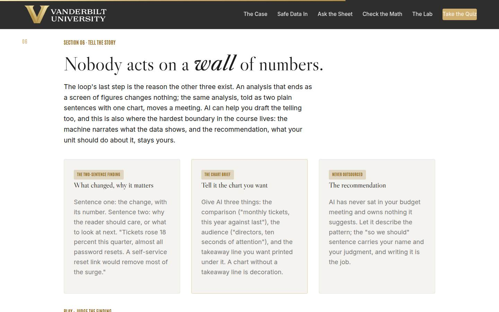
06 · Tell the story Full 10 min · Core 7
Install the two-sentence finding and the chart brief as the loop's output format, and draw the hardest boundary: AI narrates patterns, the recommendation stays human.
Say
“Last step of the loop, and it's the only one your readers see. An analysis that ends as a screen of numbers changes nothing; the same analysis, told right, moves a meeting. The format is two sentences. Sentence one: what changed, with its number. Sentence two: why the reader should care, or what to look at next. 'Tickets rose 18 percent this quarter, almost all password resets after the login change. A self-service reset link would remove most of the surge.' That's a finding a director can act on in the hallway. For charts, give the AI a brief: the comparison, the audience, and the takeaway line you want printed under it, then verify the two numbers the chart hangs on. And the boundary that never moves: AI narrates what the data shows. The recommendation, what your unit should do about it, has your name on it, and writing it is the job.”
Do
- Land the reader's reality first: nobody upstairs reads a wall of numbers, and an analysis that ends as a screen of figures changes nothing.
- Walk the three cards: the two-sentence finding (read the ticket example aloud), the chart brief (comparison, audience, takeaway line), and the never-outsourced recommendation.
- Say the boundary plainly: the machine can describe what the numbers do; the 'so we should' sentence carries your name and your judgment.
- Send them to Judge the Finding: five narrations, call each one. The editorializing item is the subtle one; slow down on it.
- Run the quick check, then the drill: everyone writes the two-sentence finding for their lab run, pairs judge, two volunteers read theirs to the room.
Ask
“From the pair judging: what did your partner's finding do well, and did any finding drift past what the data showed?”
Expect:
- Praise for a concrete number in sentence one
- A confessed drift: a finding that assigned a cause or blame the data never showed
- Someone found two sentences painfully short for a complex result
Respond: On the 'too short' worry: 'The two sentences are the door, never the whole house. The full table rides behind them for anyone who asks. But if the door sentence doesn't land, nobody enters.' On the drift: 'Good catch, and notice how natural it felt. Trimming back to the rows is a discipline, and it is what keeps your findings quotable.'
Debrief: Two sentences with a number and a so-what, a chart with a takeaway line, and a recommendation that stays yours. That's the loop's last step, and it's the one that makes the other three visible to your unit.
Validate: 4+ of 5 on the trainer; drafted findings carry a number in sentence one and a reason to care in sentence two; the room can say why the recommendation is never delegated.
Watch for: Findings that quietly editorialize: blame, motive, or causes the data never showed. Name it kindly using the trainer's language, 'past what the data shows,' and have the writer trim the sentence back to the rows. Also watch for jargon relapse under time pressure; plain is the achievement.
Transition: “That's the full loop. Quiz first, then the card that puts a date on it.”
Core path: Core: cards at full strength with the example read aloud, trainer on devices, quick check stays; the draft-aloud shrinks to solo writing plus one volunteer judged by the room.
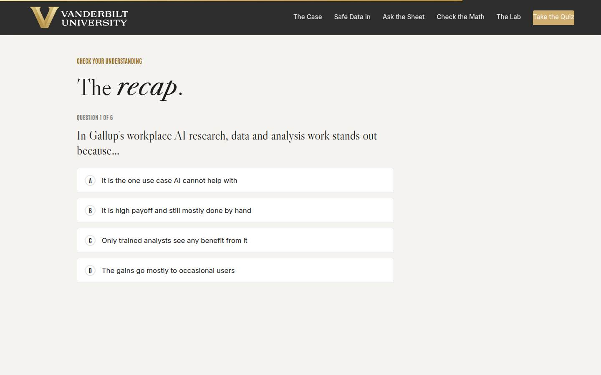
Recap quiz Full 4 min · Core 4
Score the session's knowledge against the five objectives before the capstone applies it (Kirkpatrick Level 2).
Say
“Six questions, one per big idea. This is the systems check before you write the card that leaves the room with you.”
Do
- Everyone takes it on their own device, all six questions.
- Ask for hands on 5-or-better; celebrate briefly.
- For any question the room visibly missed, do a 30-second reteach from the relevant slide, not a lecture.
Validate: Room mode at 5/6 or better. The quiz maps onto the objectives, so misses tell you exactly what to reteach.
Watch for: Racing. Frame it as the systems check before the card, not a race.
Transition: “Now the only part of today that changes anything.”
Core path: Core: keep at full length; this is the objectives' evidence.
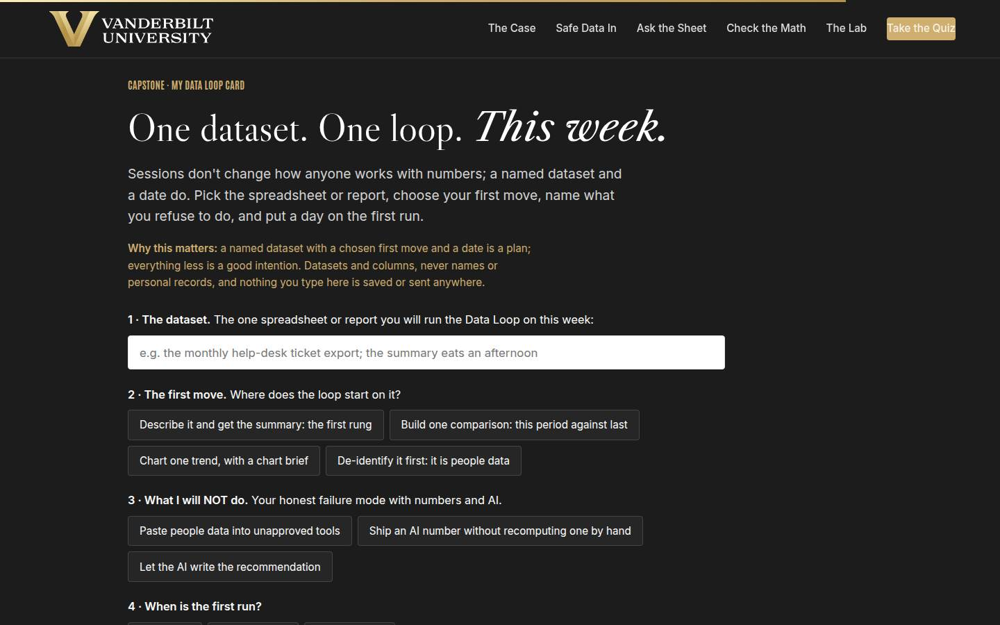
Capstone · My Data Loop card Full 6 min · Core 5
Convert the session into one dated commitment: one dataset, one first move, one named failure mode to avoid, and a dated first run. The transfer artifact and the Level 3 seed.
Say
“Sessions don't change how anyone works with numbers. A named dataset and a date do. Pick the file, the real one from your starter, with its real by-hand cost. Choose the first move: describe and summarize, one comparison, one chart with a brief, or, if it's people data, de-identify first, and choosing that one honestly is a sign you were listening. Then the honest field: what you will NOT do, because you already know your failure mode. Pasting people data into unapproved tools, shipping an unrecomputed number, or letting the AI write the recommendation. And the date: when is the first twenty-minute run? A named dataset with a first move and a date is a plan. Everything less is a good intention.”
Do
- Frame it: sessions don't change how anyone works with numbers; a named dataset and a date do.
- Repeat the privacy norm before anyone types: datasets and columns, nothing saved or sent.
- Give quiet time; this is individual work. Circulate for stuck learners: the starter from section 03 is the raw material, and 'de-identify it first' is the right first move for any people-data file.
- Point at field 3, what you will NOT do, as the honest one: everyone in the room has one of these three failure modes.
- Push the build moment, then the metric line: minutes to answer, this run against by hand, both numbers written down.
Ask
“What's most likely to make you skip the first run, and what's your plan for that obstacle?”
Expect:
- No time; the week will eat it
- Nervousness about doing the de-identification right
- Doubt that their messy data will work at all
Respond: No time: 'It's twenty minutes against a report that eats hours monthly; the math forgives you exactly once.' De-identification nerves: 'Copy, strip, read the free text, aggregate. Five minutes, and the cheat sheet has the checklist. If it's still ambiguous, that's a question for the privacy office, and asking it is a win.' Messy data: 'Messy is normal, and it goes in the describe paragraph. Rung one on a messy file is: summarize this sheet and list its problems.'
Debrief: One dataset in this room is about to get its first Data Loop run, with a check ritual attached and a metric written down. That's how the frequent-user gains start: one checked run at a time.
Validate: Every learner builds a card (all four fields). The card plus the 7-day pulse plus the 30-day re-poll is the evidence chain.
Watch for: Grand cards ('run the loop on all our data'). Push to ONE dataset with a real by-hand cost. And date-dodging: a first run 'soon' is not a commitment; help them pick the actual day on the spot.
Transition: “Reference shelf in one breath, and then the send-off.”
Core path: Core: protect the writing time; trim only your framing. Never cut the capstone.
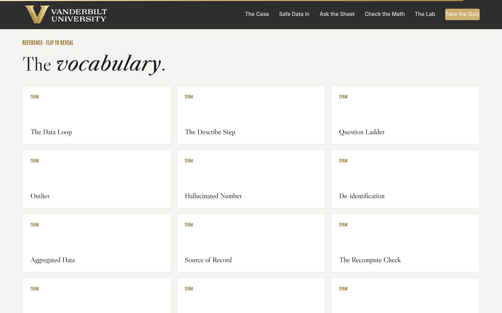
Glossary Full 1 min · Core skip
Signpost the reference layer; it lives here for after the session.
Say
“Every term from today lives here as flip cards, including 'hallucinated number,' for the next time a total arrives in perfect formatting and matches nothing.”
Do
- Flip one card on the projector (Hallucinated Number is a good pick; it gets a knowing laugh and reteaches section 04).
- Tell them it's all here whenever they need the vocabulary back.
Validate: None; reference material.
Watch for: Don't tour all thirteen cards; one flip makes the point.
Transition: “Last slide. One first run left.”
Core path: Core: skip; point at it verbally from the closing slide.
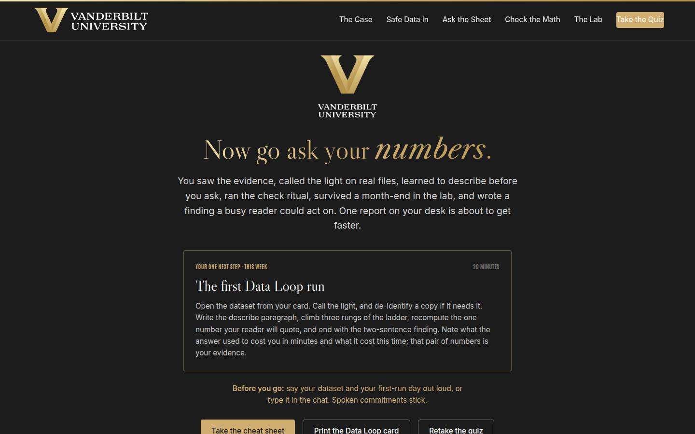
Closing · commitment Full 4 min · Core 1
Convert cards into spoken commitments, capture the Level 1 reaction check, and point at the follow-up chain.
Say
“The whole session in one breath: the research says data work is where AI pays, the light decides what a file may see, the describe step makes the answers real, the ritual makes them trustworthy, the lab showed you week four, and two plain sentences are how a finding travels. You have a card. Before you go: your dataset, and your first-run day. Say it out loud; spoken commitments stick.”
Do
- Read the featured card: the one next step is the twenty-minute first run, this week, checks included.
- Run the fist-to-five (Level 1): 'On a fist to five, how confident are you running AI on a real dataset, checks included?' Scan and note the number; the 30-day re-poll asks it again.
- Run the commitment round, popcorn style: dataset and first-run day, out loud or in chat.
- Point at the cheat sheet and Data Loop card buttons; the cheat sheet is built to sit next to the keyboard during the first run.
- Tell them the 7-day pulse is coming, then land the last line and stop on time.
Ask
“Around the room, one line each: your dataset, and your first-run day.”
Expect:
- 'The ticket export, Thursday'
- 'Our enrollment summary, but I'm de-identifying it first, Monday'
- Someone commits to asking the privacy office about their file before running anything
Respond: Thank each one, no commentary. For the privacy-office asker, warmly: 'That's not a delay, that's the course working. Ask, and run the loop on a practice file in the meantime so the skill is warm when the answer comes.'
Debrief: The session's success metric isn't in this room; it's the 7-day pulse: how many first runs actually happened, what they cost in minutes, and what the checks caught.
Validate: Fist-to-five mostly 3+ (Level 1); a majority state a dataset and a day out loud or in chat. Count both; with the pulse and the 30-day re-poll, that's your evidence chain.
Watch for: Cards that quietly skipped the date. The commitment round catches them: no day, no commitment; help them pick one on the spot.
Transition: “Go book the twenty minutes. And when your check catches its first wrong number, and it will, that catch is the sound of the loop working.”
Core path: Core: fist-to-five plus a fast commitment round; the ending survives every cut.
Generated from facilitator/notes.json. The on-screen facilitator edition lives at ./ alongside this guide.